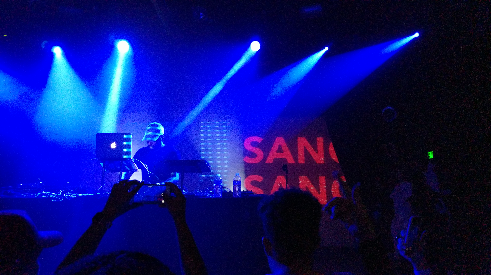
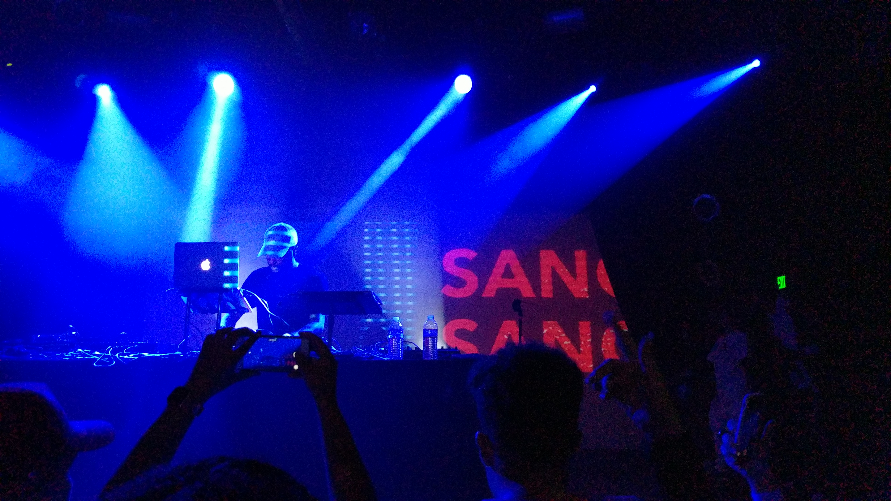
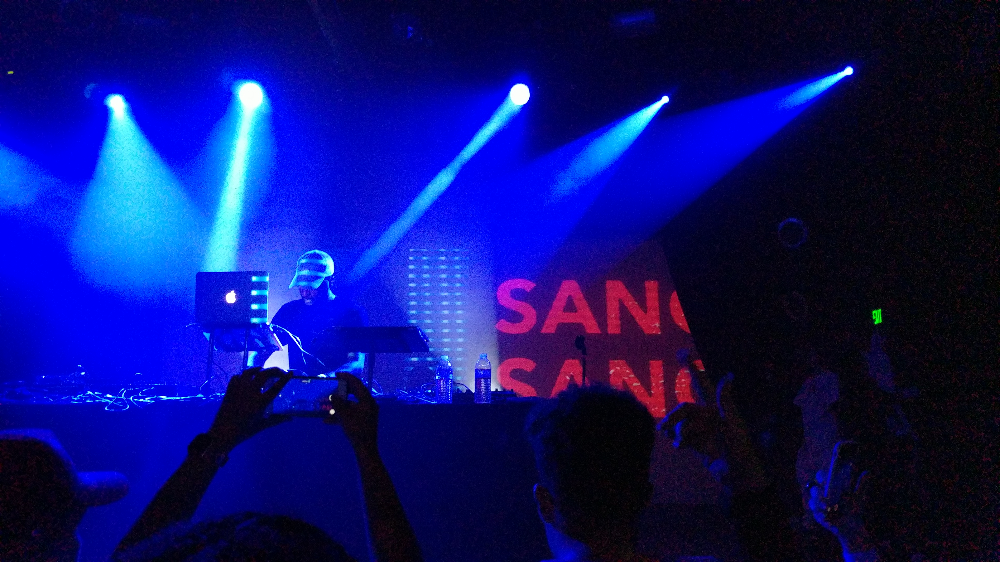

This photo is from after a concert freshman year.
It was second semester, and one of the few times I had left campus.
I saw good music, met new people, and spent quality time with people I was just getting to know.
It was also exciting because my friend happened to know the artist, Sango.
After the concert, since it was at a small venue, we just went up to the stage and my friend said hi.
We talked about his child, his touring, and the two of them reminisced about their previous meetings. -MP
